Código
library(tmap)
data(World)
tmap_style("classic")
# Desenhando um rápido mapa temático mundial para esperança de vida.
qtm(World, fill = "life_exp")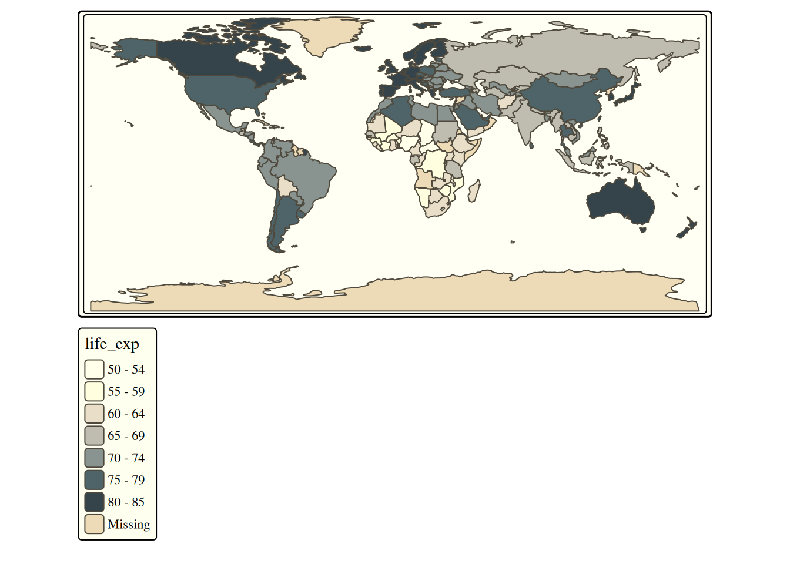
Ao final deste capítulo, o estudante deverá ser capaz de:
Os dados de área representam fenômenos agregados por unidades geográficas discretas, como municípios, estados, distritos censitários ou setores epidemiológicos. Neste capítulo, apresentamos as principais técnicas de análise para esse tipo de dado, com aplicações práticas em saúde pública.
library(tmap)
data(World)
tmap_style("classic")
# Desenhando um rápido mapa temático mundial para esperança de vida.
qtm(World, fill = "life_exp")
# ============================================================================
# LER A PLANILHA
# ============================================================================
library(readxl)
library(dplyr)
dengue <- read_excel("dados/dengue/dengue2025.xlsx") |>
mutate(code_muni = as.character(code_muni),
casos = as.numeric(casos),
pop2022 = as.numeric(pop2022),
incidencia = round(casos / pop2022 * 100000, 1))
head(dengue)geobrPara acessar os dados dos limites territoriais de todos os estados brasileiros é necessário utilizar a função read_state.
# ============================================================================
# BAIXAR MALHA MUNICIPAL DO RJ
# ============================================================================
library(geobr)
# Baixar a malha municipal do estado do Rio de Janeiro
# code_muni = 33 (código do estado do RJ)
mapa_rj <- read_municipality(code_muni = 33, year = 2024) |>
mutate(code_muni = as.character(code_muni))arquivo.shpSupondo o shape file já estar em algum diretório.
library(sf)
mapa_rj <- st_read("malhas/mapa_rj.shp")Renomeando as variáveis para ser semelhante ao objeto proveniente do geobr:
mapa_rj <- mapa_rj %>%
rename(
code_muni = code_mn,
name_muni = name_mn,
code_state = cod_stt,
abbrev_state = abbrv_s,
name_state = nam_stt,
code_region = cod_rgn,
name_region = nam_rgn,
geom = geometry
)library(ggplot2)
# Visualizar rapidamente o mapa
ggplot(mapa_rj) +
geom_sf()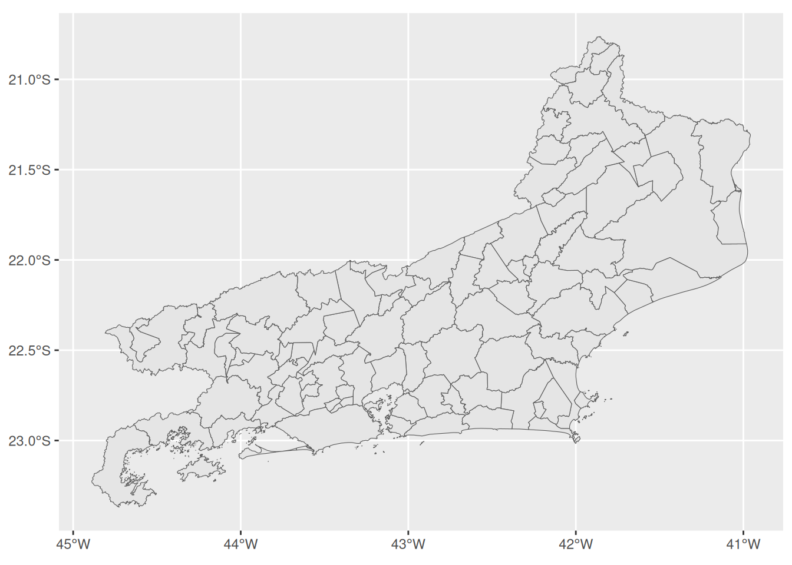
# ============================================================================
# Left Join mapa_rj + planilha casos dengue
# ============================================================================
mapa_rj <- mapa_rj |>
mutate(code_muni = as.character(code_muni)) |>
left_join(dengue, by = "code_muni") |>
select(code_muni, municipio, pop2022, casos, incidencia) # ============================================================================
# Mapa Temático com as incidências de dengue por município de forma contínua
# ============================================================================
library(ggplot2)
ggplot() +
geom_sf(data = mapa_rj, aes(fill = incidencia), color = "white", size = 0.2) +
scale_fill_viridis_c(option = "plasma",
name = "Incidência\n(por 100.000 hab)",
direction = -1) + # direction = -1 inverte a escala
theme_minimal() +
labs(title = "Incidência de Casos nos Municípios do RJ - 2025",
subtitle = "Escala Contínua",
caption = "Fonte: Dados Simulados") +
theme(legend.position = "right",
plot.title = element_text(hjust = 0.5, face = "bold"),
plot.subtitle = element_text(hjust = 0.5),
axis.text = element_blank(),
axis.title = element_blank()) 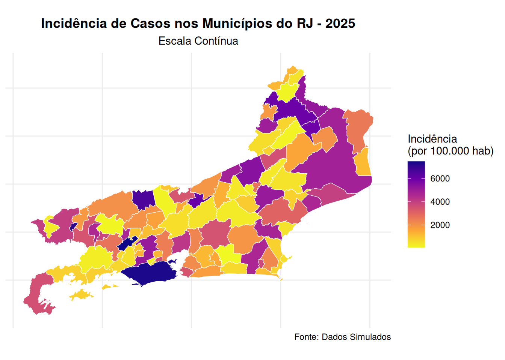
# Sumário estatístico da incidência de dengue por município
summary(mapa_rj$incidencia)#> Min. 1st Qu. Median Mean 3rd Qu. Max.
#> 51.7 723.5 1791.9 2375.7 3779.5 7458.7# ============================================================================
# Mapa Temático com as incidências de dengue por município de forma categórica
# ============================================================================
# Criar categorias usando 5 classes com método quantil
library(viridis)
map_data <- mapa_rj %>%
mutate(
incidencia_cat = cut(incidencia,
breaks = c(0, 51.7, 723.5, 1791.9, 2375.7, 3779.5, 7458.7, Inf),
labels = c("Mín - 51.7",
"51.7 - 723.5",
"723.5 - 1791.9",
"1791.9 - 2375.7",
"2375.7 - 3779.5",
"3779.5 - 7458.7",
"> 7458.7"),
include.lowest = TRUE,
right = FALSE)
)
ggplot() +
geom_sf(data = map_data, aes(fill = incidencia_cat), color = "white", size = 0.2) +
scale_fill_manual(values = viridis(7, option = "plasma", direction = -1),
name = "Incidência\n(por 100.000 hab)",
na.translate = FALSE) +
theme_minimal() +
labs(title = "Incidência de Casos nos Municípios do RJ",
subtitle = "Classificação por Quantis",
caption = "Fonte: Dados Simulados") +
theme(legend.position = "right",
plot.title = element_text(hjust = 0.5, face = "bold"),
plot.subtitle = element_text(hjust = 0.5),
axis.text = element_blank(),
axis.title = element_blank()) 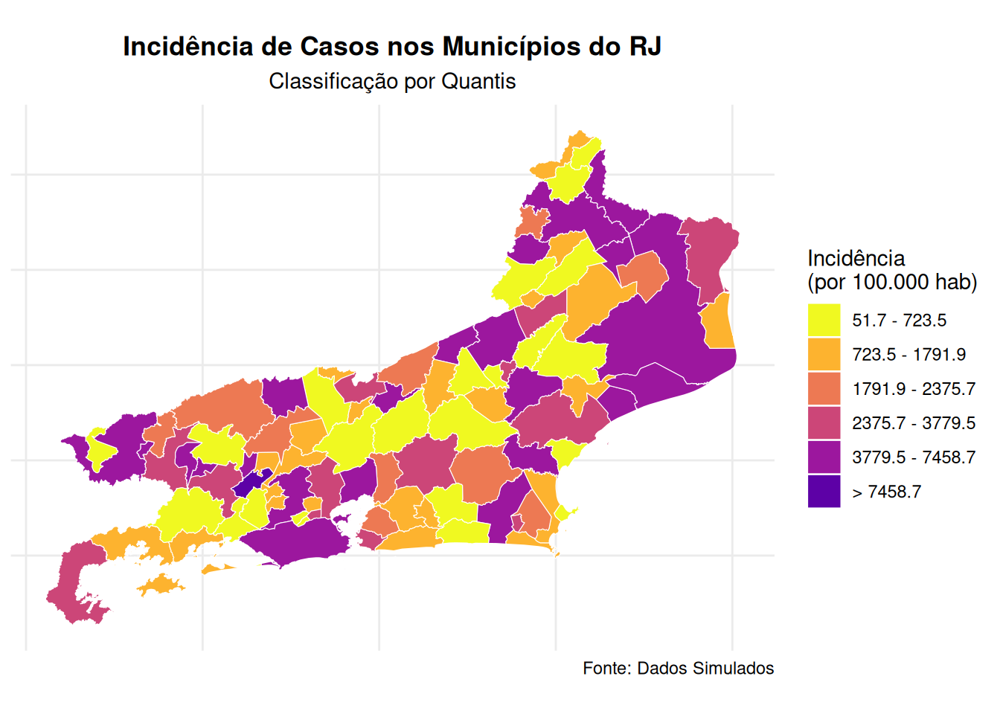
# ============================================================================
# Mapa Temático com as incidências de dengue por município de forma categórica
# ============================================================================
library(classInt)
# Calcular breaks Jenks
jenks_breaks <- classIntervals(mapa_rj$incidencia, n = 7, style = "jenks")$brks
# Criar labels com os intervalos (formato igual ao da imagem, mas com os valores)
jenks_labels <- c(
paste0(round(jenks_breaks[1], 1), " - ", round(jenks_breaks[2], 1)),
paste0(round(jenks_breaks[2], 1), " - ", round(jenks_breaks[3], 1)),
paste0(round(jenks_breaks[3], 1), " - ", round(jenks_breaks[4], 1)),
paste0(round(jenks_breaks[4], 1), " - ", round(jenks_breaks[5], 1)),
paste0(round(jenks_breaks[5], 1), " - ", round(jenks_breaks[6], 1)),
paste0(round(jenks_breaks[6], 1), " - ", round(jenks_breaks[7], 1)),
paste0("> ", round(jenks_breaks[7], 1))
)
# Criar a variável categórica
mapa <- mapa_rj %>%
mutate(
incidencia_cat = cut(incidencia,
breaks = jenks_breaks,
labels = jenks_labels,
include.lowest = TRUE,
right = FALSE)
)
# Plotar o mapa
ggplot() +
geom_sf(data = mapa, aes(fill = incidencia_cat), color = "white", size = 0.2) +
scale_fill_manual(values = viridis(7, option = "plasma", direction = -1),
name = "Incidência\n(por 100.000 hab)",
na.translate = FALSE) +
theme_minimal() +
labs(title = "Incidência de Casos nos Municípios do RJ",
subtitle = "Classificação por Quebras Naturais (Jenks)",
caption = "Fonte: SINAN") +
theme(legend.position = "right",
plot.title = element_text(hjust = 0.5, face = "bold"),
plot.subtitle = element_text(hjust = 0.5),
axis.text = element_blank(),
axis.title = element_blank())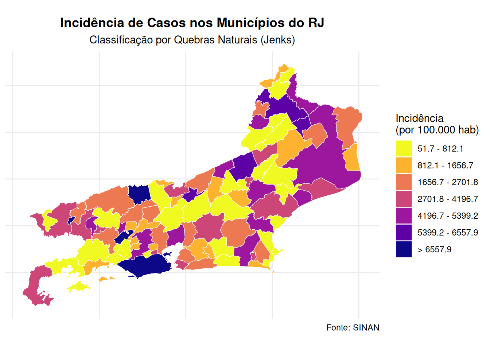
A matriz de vizinhança é um instrumento fundamental da Estatística Espacial utilizado para representar formalmente quais áreas são consideradas vizinhas entre si. Em termos simples, ela transforma o mapa em uma estrutura matemática que indica quem é vizinho de quem.
Imagine os municípios de um estado. No mapa, visualmente conseguimos perceber quais compartilham fronteiras. A matriz de vizinhança traduz essa informação em números: se dois municípios são vizinhos, atribuímos valor 1; se não são, atribuímos 0. O resultado é uma tabela quadrada (n × n), onde n é o número de municípios analisados.
Municípios analisados:
Rio de Janeiro, Niterói, São Gonçalo, Duque de Caxias, Nova Iguaçu
Critério: Contiguidade do tipo Rainha
(considera vizinhos os municípios que compartilham qualquer ponto de fronteira)
| Rio | Niterói | S. Gonçalo | D. Caxias | N. Iguaçu | |
|---|---|---|---|---|---|
| Rio | 0 | 1 | 1 | 1 | 1 |
| Niterói | 1 | 0 | 1 | 0 | 0 |
| S. Gonçalo | 1 | 1 | 0 | 0 | 0 |
| D. Caxias | 1 | 0 | 0 | 0 | 1 |
| N. Iguaçu | 1 | 0 | 0 | 1 | 0 |
Notas:
Essa matriz é essencial porque muitos fenômenos da gestão pública apresentam dependência espacial. Ou seja, o que acontece em um município pode influenciar municípios vizinhos. Exemplos incluem:
Sem a matriz de vizinhança, os métodos utilizados na estatísticos estatística tratariam cada município como independente. Com ela, conseguimos incorporar a ideia de que “o território importa”.
Existem diferentes critérios para definir vizinhança:
Contiguidade (compartilham fronteira);
Distância (municípios dentro de um raio específico);
k-vizinhos mais próximos (cada área tem um número fixo de vizinhos).
A escolha do critério depende do problema de política pública analisado. Para doenças transmissíveis, por exemplo, a contiguidade territorial pode ser adequada. Já para fluxos econômicos, a distância ou conectividade pode fazer mais sentido.
# ============================================================================
# MATRIZ DE VIZINHANÇA DOS MUNICÍPIOS DO RIO DE JANEIRO
# ============================================================================
library(spdep)
# ============================================================================
# 1. CRIAR A MATRIZ DE VIZINHANÇA
# ============================================================================
# Converter para objeto sp (formato exigido por alguns pacotes)
# Mas o spdep também aceita sf diretamente
rj_sp <- as(mapa_rj, "Spatial")
# Criar lista de vizinhos baseada em contiguidade (critério "rainha" - queen)
# queen = TRUE considera vizinhos que compartilham qualquer ponto da fronteira
vizinhos_rainha <- poly2nb(mapa_rj, queen = TRUE)
# Criar lista de vizinhos baseada em contiguidade (critério "torre" - rook)
# queen = FALSE considera apenas vizinhos com fronteira lateral
vizinhos_torre <- poly2nb(mapa_rj, queen = FALSE)
# Verificar o resultado
summary(vizinhos_rainha)#> Neighbour list object:
#> Number of regions: 92
#> Number of nonzero links: 438
#> Percentage nonzero weights: 5.174858
#> Average number of links: 4.76087
#> Link number distribution:
#>
#> 1 2 3 4 5 6 7 8 9
#> 3 7 18 16 15 14 11 5 3
#> 3 least connected regions:
#> 5 34 53 with 1 link
#> 3 most connected regions:
#> 49 50 55 with 9 linkssummary(vizinhos_torre)#> Neighbour list object:
#> Number of regions: 92
#> Number of nonzero links: 402
#> Percentage nonzero weights: 4.749527
#> Average number of links: 4.369565
#> Link number distribution:
#>
#> 1 2 3 4 5 6 7 8 9
#> 3 10 22 17 14 15 5 4 2
#> 3 least connected regions:
#> 5 34 53 with 1 link
#> 2 most connected regions:
#> 49 55 with 9 links| Item do Output | O que representa |
|---|---|
| Number of regions | Número total de unidades territoriais analisadas (ex.: municípios). |
| Number of nonzero links | Total de conexões de vizinhança existentes entre as áreas. |
| Percentage nonzero weights | Percentual de conexões existentes em relação ao total possível de conexões. |
| Average number of links | Número médio de vizinhos por unidade territorial. |
| Link number distribution | Distribuição do número de vizinhos entre as áreas analisadas. |
| Least connected regions | Unidades territoriais com menor número de vizinhos. |
| Most connected regions | Unidades territoriais com maior número de vizinhos. |
# ============================================================================
# 2. CONVERTER PARA MATRIZ DE VIZINHANÇA (FORMATO TABELA)
# ============================================================================
# Converter lista de vizinhos para matriz binária
matriz_vizinhos_rainha <- nb2mat(vizinhos_rainha, style = "B", zero.policy = TRUE)
matriz_vizinhos_torre <- nb2mat(vizinhos_torre, style = "B", zero.policy = TRUE)
# Visualizar as primeiras linhas e colunas da matriz
print(matriz_vizinhos_rainha[1:10, 1:10])#> [,1] [,2] [,3] [,4] [,5] [,6] [,7] [,8] [,9] [,10]
#> 1 0 0 0 0 0 0 0 0 0 0
#> 2 0 0 0 0 0 0 0 0 0 0
#> 3 0 0 0 0 0 1 0 0 0 0
#> 4 0 0 0 0 0 0 0 0 0 0
#> 5 0 0 0 0 0 0 0 0 0 0
#> 6 0 0 1 0 0 0 0 0 0 0
#> 7 0 0 0 0 0 0 0 1 0 0
#> 8 0 0 0 0 0 0 1 0 0 0
#> 9 0 0 0 0 0 0 0 0 0 0
#> 10 0 0 0 0 0 0 0 0 0 0# Verificar dimensões (deve ser 92x92, pois são 92 municípios)
dim(matriz_vizinhos_rainha)#> [1] 92 92library(sp)
mapa_rj.sp <- as(mapa_rj, 'Spatial') # convertendo em formato sp
coord <- coordinates(mapa_rj.sp) # coordenadas dos centroides dos poligonos do RJ
class(mapa_rj.sp)#> [1] "SpatialPolygonsDataFrame"
#> attr(,"package")
#> [1] "sp"viz.sf <- as(nb2lines(vizinhos_rainha, coords = coord), 'sf')
viz.sf <- st_set_crs(viz.sf, st_crs(mapa_rj))st_set_crs() define o sistema de referência de coordenadas (CRS) do objeto viz.sf.
Ele está copiando o CRS do objeto setor.sf, garantindo que os dois objetos estejam no mesmo sistema de coordenadas.
# Plotando o grafo de conectividade por contiguidade
mapa.viz <- ggplot(mapa_rj) +
geom_sf(fill = 'lightpink', color = 'white') +
geom_sf(data = viz.sf) +
theme_minimal() +
ggtitle("Vizinhança por conectividade (vizinhos_rainha)") +
ylab("Latitude") +
xlab("Longitude")
mapa.viz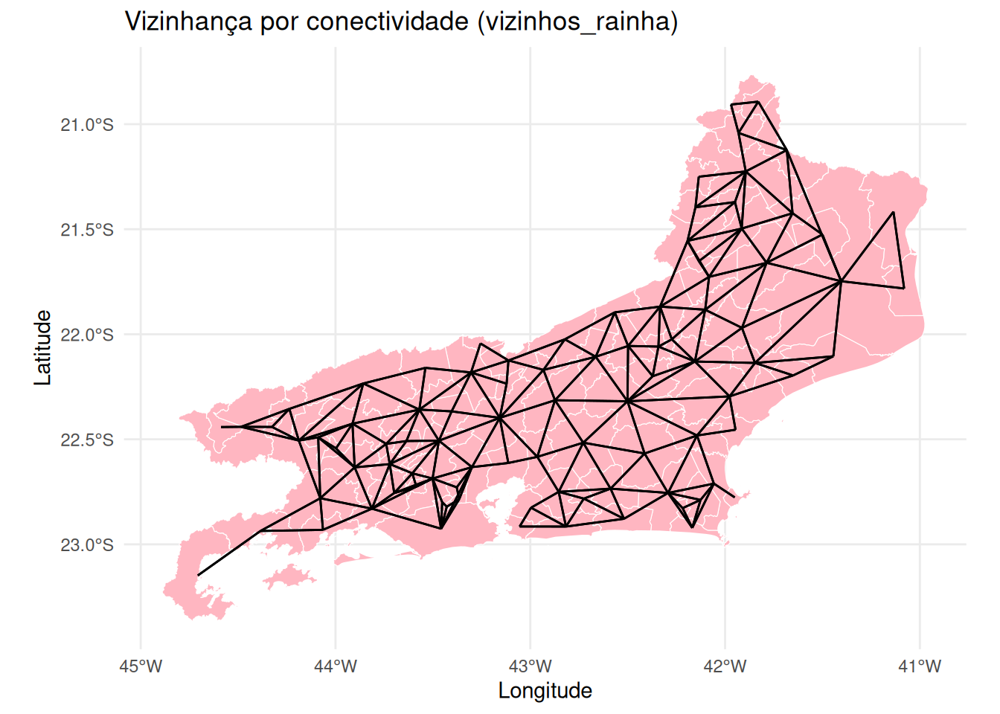
🔎 Moran Global
O Moran Global é uma medida sintética que avalia se existe autocorrelação espacial em todo o território analisado. Em outras palavras, ele indica se municípios vizinhos tendem a apresentar valores semelhantes para determinado indicador, como renda, taxa de mortalidade ou incidência de dengue. Quando o índice é positivo e estatisticamente significativo, significa que áreas próximas apresentam padrões semelhantes (alto com alto, baixo com baixo), revelando a existência de agrupamentos espaciais. Quando é próximo de zero, sugere ausência de padrão espacial.
O Moran Global é importante porque permite verificar se o fenômeno analisado possui organização territorial, indicando a necessidade de políticas regionais integradas em vez de intervenções isoladas.
\[I = \frac{ \sum_{i=1}^{n} \sum_{j=1}^{n} w_{ij} (y_i - \bar{y})(y_j - \bar{y}) }{ \sum_{i=1}^{n} (y_i - \bar{y})^2 }\]
\(I > 0\): valores similares estão próximos (agrupamento positivo).
\(I < 0\): valores diferentes estão próximos (dispersão).
\(I \approx 0\): padrão aleatório.
Sabendo que:
pesos.viz <- nb2listw(vizinhos_torre)
moran.test(mapa$casos, pesos.viz)#>
#> Moran I test under randomisation
#>
#> data: mapa$casos
#> weights: pesos.viz
#>
#> Moran I statistic standard deviate = 2.8562, p-value = 0.002144
#> alternative hypothesis: greater
#> sample estimates:
#> Moran I statistic Expectation Variance
#> 0.032331341 -0.010989011 0.000230046O resultado do teste de Moran’s I indicou autocorrelação espacial positiva estatisticamente significativa \((I = 0,0324; Z = 2,88; p = 0,0019)\). Como o valor observado é superior ao valor esperado \((E[I] = −0,0109)\) e o p-valor é inferior a \(0,05\), rejeita-se a hipótese nula de ausência de dependência espacial. Isso sugere que municípios vizinhos tendem a apresentar valores semelhantes da variável analisada, caracterizando um padrão de agrupamento espacial. Contudo, apesar de estatisticamente significativo, o valor do índice é de baixa magnitude, indicando que a intensidade da autocorrelação espacial é relativamente fraca.
moran.test(mapa$incidencia, pesos.viz)#>
#> Moran I test under randomisation
#>
#> data: mapa$incidencia
#> weights: pesos.viz
#>
#> Moran I statistic standard deviate = -0.57317, p-value = 0.7167
#> alternative hypothesis: greater
#> sample estimates:
#> Moran I statistic Expectation Variance
#> -0.053004448 -0.010989011 0.005373449O teste de Moran indicou ausência de autocorrelação espacial significativa na incidência analisada \((I = −0,055; p-valor = 0,71)\). Como o valor do índice é próximo de zero e o \(p-valor\) é superior a \(0,05\), não há evidências para rejeitar a hipótese de aleatoriedade espacial. Assim, os dados não apresentam padrão de agrupamento ou dispersão no espaço, sugerindo que a variação observada não está associada à localização geográfica das áreas estudadas.
📍 Moran Local (LISA)
O Moran Local, também conhecido como LISA (Local Indicators of Spatial Association), aprofunda a análise ao avaliar a autocorrelação espacial em cada unidade territorial individualmente. Diferentemente do Moran Global, que fornece um único valor para todo o estado ou país, o Moran Local identifica onde exatamente estão os agrupamentos espaciais e possíveis áreas atípicas. Ele permite classificar cada município como parte de um cluster de valores altos, um cluster de valores baixos ou como um ponto fora do padrão em relação aos seus vizinhos. Essa análise é fundamental para identificar territórios prioritários e direcionar recursos de forma mais estratégica.
Avalia a autocorrelação espacial local, permitindo identificar regiões com agrupamentos (clusters) ou comportamentos atípicos.
\[I^{(i)} = \frac{n}{\sum_{j=1}^{n} (z_j - \bar{z})^2} \sum_{j=1}^{n} w_{ij} (z_i - \bar{z})(z_j - \bar{z})\]
Sabendo que:
mapa$pval <- localmoran(mapa$casos, pesos.viz)[,5]
library(tmap)
tmap_mode("plot") # modo estático
tm_shape(mapa) +
tm_polygons(
col = "pval",
title = "p-valores",
breaks = c(0, 0.01, 0.05, 0.10, 1),
style = "fixed",
palette = "-Red"
)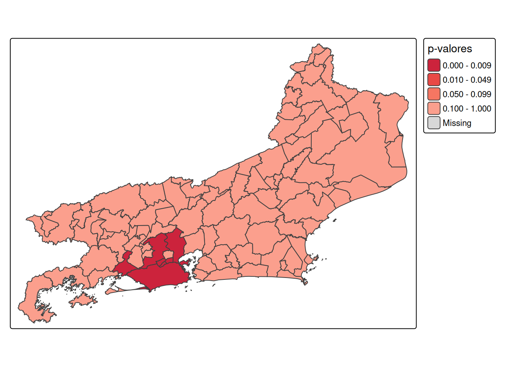
resI <- localmoran.sad(lm(mapa$casos ~ 1), 1:length(vizinhos_torre), vizinhos_torre, style = "W")
summary(resI)[1:10,]A função localmoran.sad() calcula o Moran Local (Iᵢ) e algumas outras estatísticas associadas para cada polígono (setor).
lm(setor.sf$tx ~ 1): cria um modelo linear sem preditores (apenas o intercepto), ou seja, considera a variável casos como resposta a ser analisada.
1:length(viz): identifica o índice de cada área/setor.
viz: é a estrutura de vizinhança (do tipo nb), que define quem é vizinho de quem.
style = "W": define o estilo de normalização dos pesos espaciais (padronização row-standardized).
A está mostrando:
Local Morans I: Valor do I de Moran local (Iᵢ), indicando se o valor do setor e seus vizinhos são semelhantes (positivo) ou diferentes (negativo).
Stand. dev. (N): Desvio padrão padronizado da estatística de Moran local.
Pr. (N): p-valor do teste de significância para o valor de Iᵢ (baseado na dist. normal).
Saddlepoint: Valor do I de Moran local corrigido.
mapa$MoranLocal <- summary(resI)[,1]
library(scales)
ggplot(mapa) +
geom_sf(aes(fill = MoranLocal), color = 'black') +
scale_fill_gradientn(colours=c("blue", "white", "red"),
values=rescale(c(min(mapa$MoranLocal), 0, max(mapa$MoranLocal))), guide="colorbar") +
ggtitle("Moran local") +
theme_void()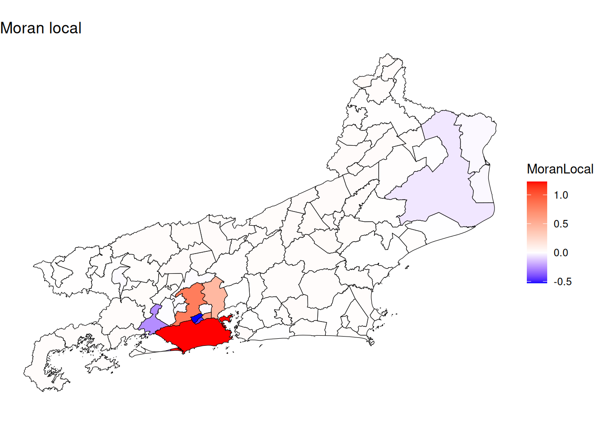
Neste mapa, podemos observar:
Valores altos de Local Morans I com p-valor pequeno indicam clusters estatisticamente significativos:
Positivo + significativo \(\rightarrow\) cluster alto-alto ou baixo-baixo.
Negativo + significativo \(\rightarrow\) outlier (ex: um valor alto cercado por baixos, ou o contrário).
🗺 LISA Map
O LISA Map é um mapa temático que representa graficamente os resultados do Índice de Moran Local, ele identifica:
Clustering local (agrupamento de valores semelhantes)
Outliers espaciais (valores discrepantes em relação aos vizinhos)
Regiões não significativas (sem padrão espacial detectável)
| Tipo de Associação | Descrição | Interpretação Espacial |
|---|---|---|
| 🔴 Alto-Alto (High-High) | Valor alto cercado por vizinhos também com valores altos | Indica cluster de altas magnitudes, também chamado de hotspot |
| 🔵 Baixo-Baixo (Low-Low) | Valor baixo cercado por vizinhos com valores baixos | Indica cluster de baixas magnitudes, ou coldspot |
| 🟠 Alto-Baixo (High-Low) | Valor alto cercado por valores baixos | Indica um outlier espacial positivo |
| 🟡 Baixo-Alto (Low-High) | Valor baixo cercado por valores altos | Indica um outlier espacial negativo |
| ⚪ Não significativo | Sem associação espacial relevante | O valor na região não apresenta padrão espacial detectável |
Os valores do Moran Local são testados por permutação para verificar se o padrão observado é estatisticamente significativo ou poderia ocorrer por acaso.
Apenas as regiões significativas (p-valor < 0.05) costumam ser coloridas nos mapas.
Esse mapa abaixo pertence ao artigo “Are regions equal in adversity? A spatial analysis of the spread and dynamics of COVID-19 in Europe”, de Amdaoud, Arcuri e Levratto (2021). O artigo realiza uma análise espacial detalhada da mortalidade por COVID-19 em 125 regiões europeias durante a primeira onda da pandemia (março a maio de 2020).
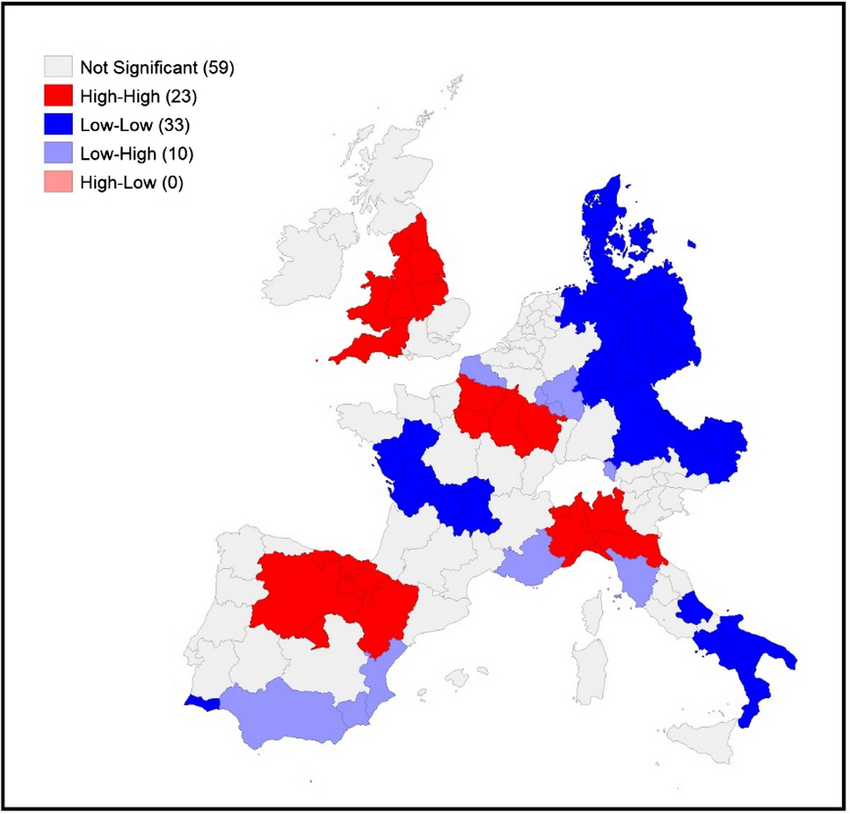
Utilizando o índice de Moran Local (LISA), o estudo identifica padrões de autocorrelação espacial na mortalidade por COVID-19 entre as regiões europeias durante a primeira onda da pandemia. O resultado evidencia clusters espaciais significativos, com destaque para regiões High-High (altas taxas de mortalidade cercadas por outras com altas taxas), como o norte da Itália, Madrid e a região da Alsácia, na França. Ao mesmo tempo, regiões Low-Low, como o sul da Itália, Dinamarca e partes da Alemanha Oriental, apresentaram baixa mortalidade em vizinhança igualmente baixa. Esses padrões persistentes ao longo do tempo indicam que a disseminação da pandemia seguiu lógicas regionais, reforçando a importância de políticas públicas que considerem as desigualdades territoriais na resposta à crise sanitária.
Autocorrelação espacial dos casos confirmados de covid-19 em municípios sede de regionais de saúde e vizinhos, segundo a análise do Índice Local de Moran (LISA) Univariado. Paraná, Brasil, março de 2020 a janeiro de 2021.
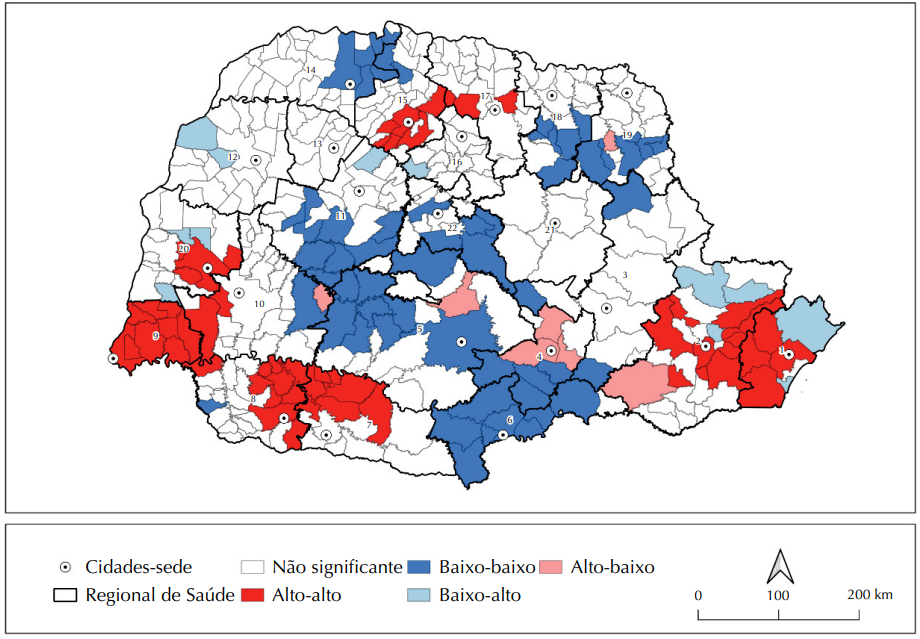
Na figura acima, observamos que o valor do Índice de Moran Global foi de \(0,404\), com \(p-valor < 0,001\), indicando uma autocorrelação espacial positiva moderada e estatisticamente significativa. Isso significa que a distribuição dos casos não ocorreu de forma aleatória no território paranaense – pelo contrário, municípios com taxas semelhantes de COVID-19 tenderam a se agrupar no espaço.
Observando o mapa LISA (Indicadores Locais de Associação Espacial), podemos identificar diferentes padrões regionais. As áreas em vermelho (Alto-Alto) representam municípios com altas taxas da doença cercados por vizinhos igualmente afetados, formando verdadeiros “clusters de transmissão” que exigiam intervenções coordenadas e prioritárias. Por outro lado, as áreas em azul escuro (Baixo-Baixo) mostram regiões onde tanto o município quanto seus vizinhos mantiveram baixas taxas, sugerindo que estratégias de controle podem ter sido mais eficazes nessas localidades.
As áreas em rosa (Alto-Baixo) e azul claro (Baixo-Alto) revelam situações de transição ou exceção, onde um município destoa do padrão de seus vizinhos. Estes são pontos de atenção para a vigilância em saúde, pois podem indicar locais onde a doença se comporta de forma diferente da região de entorno. Já as áreas em cinza (Não significante) não apresentaram padrão espacial definido, podendo refletir maior heterogeneidade local ou dinâmicas de transmissão mais complexas.
library(spdep)
# Convertendo uma estrutura de vizinhança (objeto nb) em uma matriz de pesos espaciais padronizada
w <- nb2listw(vizinhos_torre, style = "W")
# Matriz de pesos espaciais padronizada (row-standardized)
resI <- localmoran(mapa$casos, nb2listw(vizinhos_torre, style = "W"))
# Armazena estatísticas no objeto espacial
mapa$Ii <- resI[,1] # valor de Moran Local
mapa$pvalue <- resI[,5] # p-valor
# Valor padronizado da variável tx
mapa$z_casos <- scale(mapa$casos)[, 1]
# Média dos vizinhos (lagged value)
lag_casos <- lag.listw(w, mapa$z_casos)
# Classificação dos tipos de associação local dos clusters
mapa$cluster_type <- "Não significativo"
mapa$cluster_type[mapa$pvalue <= 0.05 & mapa$z_casos > 0 & lag_casos > 0] <- "Alto-Alto"
mapa$cluster_type[mapa$pvalue <= 0.05 & mapa$z_casos < 0 & lag_casos < 0] <- "Baixo-Baixo"
mapa$cluster_type[mapa$pvalue <= 0.05 & mapa$z_casos > 0 & lag_casos < 0] <- "Alto-Baixo"
mapa$cluster_type[mapa$pvalue <= 0.05 & mapa$z_casos < 0 & lag_casos > 0] <- "Baixo-Alto"library(tmap)
# Modo estático (ideal para relatórios impressos ou PDF)
tmap_mode("plot")
# Tema visual limpo com fundo branco
tmap_style("white")
# Geração do mapa LISA
tm_shape(mapa) +
tm_fill(
col = "cluster_type",
palette = c(
"Alto-Alto" = "#E60000", # vermelho forte
"Baixo-Baixo" = "#0033CC", # azul escuro
"Baixo-Alto" = "#9999FF", # azul claro
"Alto-Baixo" = "#FF9999", # rosa claro
"Não significativo" = "#FFFFFF" # branco
),
title = "Cluster Local (LISA)",
legend.is.portrait = TRUE
) +
tm_borders(col = "gray40", lwd = 0.4) +
tm_layout(
main.title = "Mapa LISA - Clusters Locais dos Casos",
main.title.size = 1.2,
legend.outside = TRUE,
frame = FALSE,
bg.color = "white"
)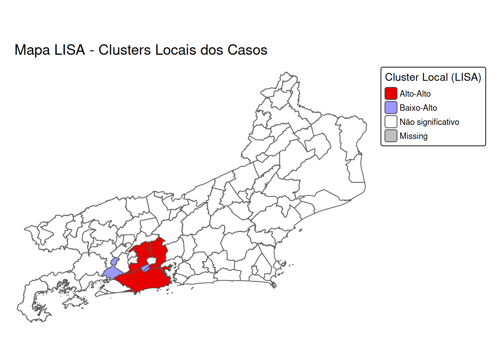
🎯 Diferença resumida
Moran Global → Existe padrão espacial no estado como um todo ?
Moran Local (LISA) → Onde estão esses padrões ?
LISA Map → Visualização espacial desses agrupamentos.
🗺️ Resumindo
Moran Global indica se há padrão geral de autocorrelação espacial (positivo, negativo ou aleatório).
Moran Local revela onde esses padrões ocorrem: clusters de alto/alto (hotspots), baixo/baixo (coldspots), alto/baixo (outliers), etc.
Imagine que você quer estimar a taxa de uma doença em vários municípios. O problema: municípios pequenos têm taxas instáveis — um único caso pode triplicar a taxa de um ano para o outro. Como resolver isso?
O Bayesiano Empírico “suaviza” a taxa observada de cada área, combinando-a com uma média de referência:
\[\hat{\theta}_i = w_i \cdot t_i + (1 - w_i) \cdot \mu\]
Leia assim: a taxa estimada é uma média ponderada entre a taxa local (\(t_i\)) e uma referência (\(\mu\)), controlada pelo peso \(w_i\).
O peso \(w_i\) depende do tamanho da população:
Município grande \(\rightarrow\) \(w_i\) próximo de 1 \(\rightarrow\) confia na taxa observada
Município pequeno \(\rightarrow\) \(w_i\) próximo de 0 \(\rightarrow\) puxa para a média de referência
Bayesiano Empírico Global
A referência é a média geral de toda a região. Um município com poucos habitantes é “puxado” para essa média geral.
Exemplo: município rural com 1 caso em 200 pessoas (taxa altíssima). O método reconhece que a população é pequena e suaviza a estimativa em direção à média do estado.
Bayesiano Empírico Local
A referência é a média dos municípios vizinhos. A ideia é que municípios próximos tendem a ter condições parecidas (clima, renda, acesso à saúde).
Exemplo: o mesmo município rural agora é comparado com seus vizinhos imediatos, não com todo o estado. Isso respeita melhor a heterogeneidade regional.
Global vs. Local: qual é a diferença ?
A diferença está em quem é a referência (\(\mu\)):
| Global | Local | |
|---|---|---|
| Referência | Média de todas as áreas | Média dos vizinhos |
| Hipótese | Todas as áreas se parecem | Áreas próximas se parecem |
| Quando usar | Região homogênea | Quando há padrão espacial |
# ============================================================================
# CALCULAR CASOS ESPERADOS
# ============================================================================
# Calcular a taxa global de incidência
taxa_global <- sum(mapa_rj$casos, na.rm = TRUE) / sum(mapa_rj$pop2022, na.rm = TRUE) * 100000
# Calcular casos esperados (pop * taxa_global / 100000)
mapa_rj <- mapa_rj |>
mutate(
casos_esperados = (pop2022 * taxa_global) / 100000,
risco_relativo_bruto = casos / casos_esperados,
incidencia_esperada = taxa_global
)# ============================================================================
# BAYES EMPÍRICO GLOBAL
# ============================================================================
library(SpatialEpi)
# Aplicar a função eBayes do pacote SpatialEpi
# Y = casos observados
# E = casos esperados
eb_results <- eBayes(
Y = mapa_rj$casos,
E = mapa_rj$casos_esperados
)
# Visualizar a estrutura dos resultados
str(eb_results)#> List of 5
#> $ RR : num [1:92] 0.185 0.183 1.067 0.355 0.127 ...
#> $ RRmed: num [1:92] 0.185 0.182 1.067 0.354 0.127 ...
#> $ beta : Named num -0.603
#> ..- attr(*, "names")= chr "(Intercept)"
#> $ alpha: num 1.22
#> $ SMR : num [1:92] 0.185 0.181 1.068 0.354 0.126 ...# Adicionar resultados ao mapa
mapa_rj <- mapa_rj |>
mutate(
# Risco Relativo Bayes Empírico (posterior mean)
rr_ebayes = eb_results$RR,
# Mediana posterior
rr_ebayes_med = eb_results$RRmed,
# SMR (Standardized Mortality Ratio)
smr = eb_results$SMR,
# Incidência suavizada
incidencia_suavizada = rr_ebayes * taxa_global,
# Parâmetros do modelo
alpha_eb = eb_results$alpha,
beta_eb = eb_results$beta
)
# Verificar resultados
summary(mapa_rj$rr_ebayes)#> Min. 1st Qu. Median Mean 3rd Qu. Max.
#> 0.01236 0.16854 0.41324 0.54738 0.87020 1.71731summary(mapa_rj$incidencia_suavizada)#> Min. 1st Qu. Median Mean 3rd Qu. Max.
#> 53.65 731.53 1793.63 2375.84 3777.00 7453.77# ============================================================================
# BAYES EMPÍRICO LOCAL
# ============================================================================
# ============================================================================
# CRIAR A MATRIZ DE VIZINHANÇA
# ============================================================================
# Criar vizinhança baseada em contiguidade (critério rainha)
nb <- poly2nb(mapa_rj, queen = TRUE)
# ============================================================================
# APLICAR O ESTIMADOR LOCAL DE BAYES EMPÍRICO
# ============================================================================
# Aplicar EBlocal
# ri = casos observados
# ni = população (ou denominador)
# zero.policy = TRUE para áreas sem vizinhos (usa o próprio valor)
eb_local <- EBlocal(
ri = mapa_rj$casos,
ni = mapa_rj$pop2022,
nb = nb,
zero.policy = TRUE,
geoda = FALSE # Usa o algoritmo de Marshall (padrão)
)
# Visualizar a estrutura do resultado
str(eb_local)#> 'data.frame': 92 obs. of 2 variables:
#> $ raw: num 0.00801 0.00788 0.04634 0.01536 0.00548 ...
#> $ est: num 0.00801 0.00789 0.04633 0.01534 0.00549 ...
#> - attr(*, "parameters")=List of 2
#> ..$ a: num [1:92] 0.000123 0.000427 0.000296 0.000199 0.000187 ...
#> ..$ m: num [1:92] 0.01204 0.01307 0.01998 0.01067 0.00756 ...# O resultado é um data.frame com:
# - raw: taxas brutas (crude rates)
# - est: estimativas suavizadas (local empirical Bayes)
# Adicionar os resultados ao mapa
mapa_rj <- mapa_rj |>
mutate(
taxa_bruta = eb_local$raw * 100000, # taxa bruta por 100.000
taxa_suavizada_local = eb_local$est * 100000, # taxa suavizada local por 100.000
rr_suavizado_local = eb_local$est / (sum(casos)/sum(pop2022)) # risco relativo
)
# ============================================================================
# EXTRAIR OS PARÂMETROS LOCAIS (phi e gamma)
# ============================================================================
# Os parâmetros locais estão armazenados como atributo
parametros_locais <- attr(eb_local, "parameters")
# Adicionar ao mapa
mapa_rj <- mapa_rj |>
mutate(
phi_local = parametros_locais$a, # parâmetro phi (α local)
gamma_local = parametros_locais$m # parâmetro gamma (β local)
)
# ============================================================================
# 5. COMPARAÇÃO: Bayes Empírico Global vs Local
# ============================================================================
# Se você já tem o Bayes Empírico global (ex: SpatialEpi::eBayes)
# Vamos supor que já calculou eb_global anteriormente
# Calcular Bayes Empírico global para comparação
library(SpatialEpi)
taxa_global <- sum(mapa_rj$casos) / sum(mapa_rj$pop2022)
mapa_rj$casos_esperados <- mapa_rj$pop2022 * taxa_global
eb_global <- eBayes(Y = mapa_rj$casos, E = mapa_rj$casos_esperados)
mapa_rj <- mapa_rj |>
mutate(
rr_bayes_global = eb_global$RR,
taxa_suavizada_global = rr_bayes_global * taxa_global * 100000
)# ============================================================================
# 6. MAPAS COMPARATIVOS
# ============================================================================
# Mapa 1: Taxa Bruta
p1 <- ggplot(mapa_rj) +
geom_sf(aes(fill = taxa_bruta), color = "gray50", size = 0.2) +
scale_fill_viridis_c(name = "Casos/100.000", direction = -1) +
labs(title = "A) Taxa Bruta") +
theme_minimal() +
theme(legend.position = "bottom")
# Mapa 2: Bayes Empírico Global
p2 <- ggplot(mapa_rj) +
geom_sf(aes(fill = taxa_suavizada_global), color = "gray50", size = 0.2) +
scale_fill_viridis_c(name = "Casos/100.000", direction = -1) +
labs(title = "B) Bayes Empírico Global") +
theme_minimal() +
theme(legend.position = "bottom")
# Mapa 3: Bayes Empírico Local (EBlocal)
p3 <- ggplot(mapa_rj) +
geom_sf(aes(fill = taxa_suavizada_local), color = "gray50", size = 0.2) +
scale_fill_viridis_c(name = "Casos/100.000", direction = -1) +
labs(title = "C) Bayes Empírico Local (EBlocal)") +
theme_minimal() +
theme(legend.position = "bottom")
# Combinar
library(patchwork)
(p1 + p2 + p3)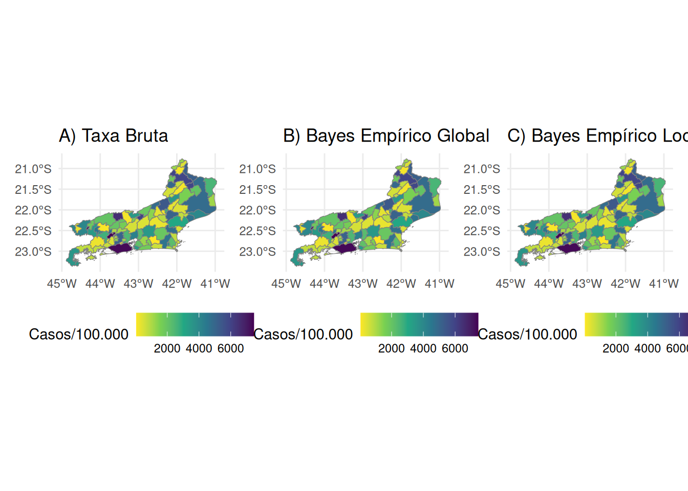
# ============================================================================
# MAPAS COM GGPLOT2
# ============================================================================
library(ggplot2)
library(patchwork)
library(viridis)
# Definir tema comum
theme_maps <- theme_minimal() +
theme(
plot.title = element_text(size = 14, face = "bold", hjust = 0.5),
plot.subtitle = element_text(size = 10, hjust = 0.5),
legend.position = "right",
legend.title = element_text(size = 10, face = "bold"),
legend.text = element_text(size = 8),
panel.grid = element_blank(),
axis.text = element_blank(),
axis.title = element_blank(),
plot.margin = margin(10, 10, 10, 10)
)
# Mapa 1: Incidência Bruta
p1 <- ggplot(mapa_rj) +
geom_sf(aes(fill = incidencia), color = "gray50", size = 0.2) +
scale_fill_viridis_c(
option = "plasma",
name = "Casos/100.000 hab",
labels = scales::comma,
direction = -1
) +
labs(
title = "A) Incidência Bruta",
subtitle = "Dengue no Rio de Janeiro - 2025"
) +
theme_maps
# Mapa 2: Incidência Suavizada
p2 <- ggplot(mapa_rj) +
geom_sf(aes(fill = incidencia_suavizada), color = "gray50", size = 0.2) +
scale_fill_viridis_c(
option = "plasma",
name = "Casos/100.000 hab",
labels = scales::comma,
direction = -1
) +
labs(
title = "B) Incidência Suavizada",
subtitle = "Bayes Empírico - Posterior Mean"
) +
theme_maps
# Combinar os 3 mapas
mapas_combinados_ggplot <- (p1 + p2)
mapas_combinados_ggplot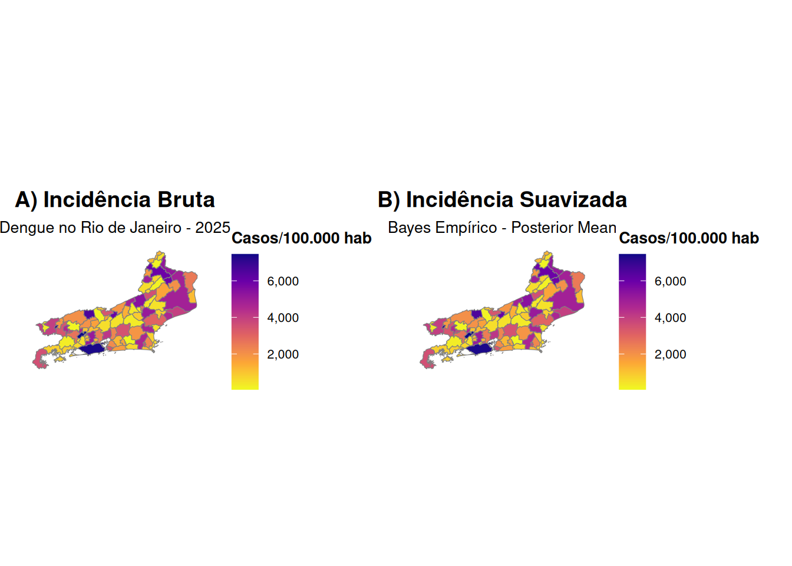
# Mapa 3: Risco Relativo Bayes
p3 <- ggplot(mapa_rj) +
geom_sf(aes(fill = rr_ebayes), color = "gray50", size = 0.2) +
scale_fill_gradient2(
low = "blue",
mid = "white",
high = "red",
midpoint = 1,
name = "Risco Relativo",
labels = scales::number,
limits = c(0, max(mapa_rj$rr_ebayes, na.rm = TRUE))
) +
labs(
title = "C) Risco Relativo Bayesiano",
subtitle = "Risco em relação à média estadual (RR = 1)"
) +
theme_maps
p3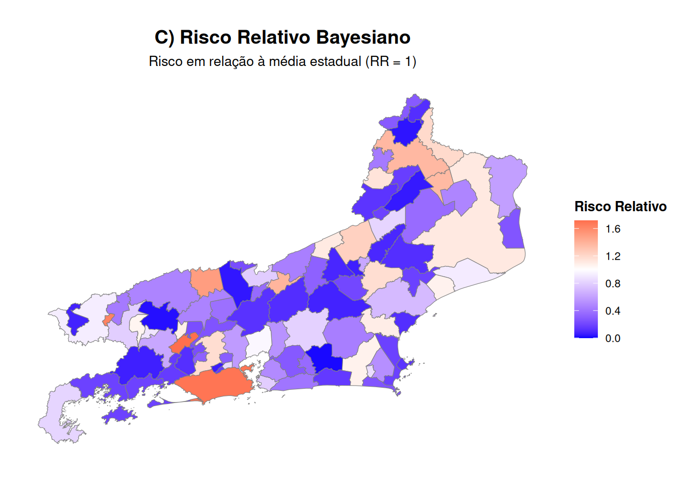
plot(mapa_rj$incidencia_suavizada, mapa_rj$incidencia)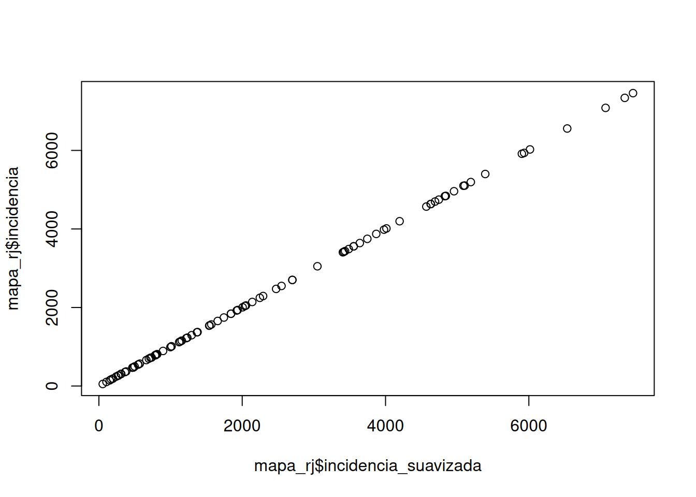
# ============================================================================
# LER A PLANILHA
# ============================================================================
hansen <- read.csv2("dados/hansen/dados_hanseniase_mt.csv") |>
mutate(
tx_detecao = casos / pop2022 * 100000
)
head(hansen)geobrPara acessar os dados dos limites territoriais de todos os estados brasileiros é necessário utilizar a função read_state.
library(geobr)
# Baixar a malha municipal do estado do MAto Grosso
# code_muni = 33 (código do estado do RJ)
mapa_mt <- read_municipality(code_muni = 51, year = 2024) |>
mutate(code_muni = as.character(code_muni))Além das análises exploratórias para os dados espaciais de área, é possível avançar na modelagem estatística dos dados por meio de modelos espaciais que consideram a dependência espacial dos dados. Entre os mais utilizados estão os modelos de autocorrelação espacial global, como o SAR (Simultaneous Autoregressive Model) e o CAR (Conditional Autoregressive Model) (CRESSIE, 1993). O modelo SAR incorpora a dependência espacial diretamente no valor da variável dependente, assumindo que o valor observado em uma região é influenciado pelos valores das regiões vizinhas. Já o modelo CAR considera essa dependência na estrutura do erro, sendo muito utilizado em abordagens bayesianas para modelagem de risco em áreas geográficas.
Outra abordagem é a dos modelos com efeitos espaciais locais, como a Regressão Geograficamente Ponderada (GWR) (FOTHERINGHAM et al., 2002). Diferente dos modelos SAR e CAR, que assumem relações espaciais globais, o GWR permite que os coeficientes da regressão variem ao longo do espaço, ajustando uma equação específica para cada localidade. Isso possibilita identificar como os efeitos de uma variável explicativa sobre a resposta mudam de acordo com a localização, sendo especialmente útil em contextos onde há forte heterogeneidade espacial.
Hipótese de independência das observações em geral é Falsa \(\rightarrow\) Existe dependência espacial, ou seja, o valor observado em uma localização tende a se parecer com os valores observados em locais vizinhos.
Efeitos Espaciais \(\rightarrow\) Se existir dependência ou correlação espacial significativa, devemos incluir no modelo os Efeitos Espaciais , caso contrário, as estimativas geradas pelo modelo de regressão podem ficar enviesadas, criando associações espúrias (isto é, sugerindo relações estatísticas onde elas não existem de fato, ou mascarando relações reais);
Como verificar ? \(\rightarrow\) Para detectar a dependência espacial, podemos analisar os resíduos da regressão tradicional (OLS), utilizando indicadores como o índice de Moran dos resíduos. Se os resíduos mostrarem autocorrelação espacial significativa, isso indica que há estrutura espacial não modelada.
Detectada a autocorrelação espacial: e agora ? \(\rightarrow\) É necessário adotar modelos de regressão que incorporem explicitamente os efeitos espaciais, evitando vieses nas estimativas dos coeficientes.
Esses modelos assumem que a estrutura espacial é constante em todo o espaço geográfico. Utilizam um único parâmetro para captar a autocorrelação.
Um exemplo é o Modelo de Erro Espacial (Spatial Error Model - CAR), representado por:
\[y_i = \beta_0 + \sum^{p}_{k} \beta_k x_{ik} + \varepsilon_i \text{ , sendo } \varepsilon_i = \lambda W + \xi\]
Sendo:
\(y_i\): valor observado da variável dependente na unidade \(i\);
\(\beta_0\): intercepto da regressão;
\(\beta_k\): coeficiente da \(k\)-ésima variável explicativa;
\(x_{ik}\): valor da \(k\)-ésima variável explicativa para a unidade \(i\);
\(\varepsilon_i\): erro com estrutura de autocorrelação espacial;
\(\lambda\): coeficiente de autocorrelação espacial;
\(W\): matriz de vizinhança espacial (define como cada unidade está conectada às outras);
\(\xi\): erro aleatório normal (sem autocorrelação).
\(\rightarrow\) Podemos observar que os efeitos da autocorrelação espacial são associados ao termo de erro.
🧠 Interpretação:
Se \(\lambda \ne 0\), há evidência de dependência espacial nos erros, ou seja, o erro em uma localidade está correlacionado com os erros em localidades vizinhas.
Se \(\lambda = 0\), o modelo reduz-se a uma regressão tradicional, e não há autocorrelação espacial significativa.
Enquanto os modelos globais assumem uma relação espacial uniforme, os modelos locais admitem que os parâmetros da regressão variam ao longo do espaço geográfico.
Um exemplo clássico é o Modelo Geograficamente Ponderado (Geographically Weighted Regression - GWR), expresso por:
[ y_i = {0}(u_i, v_i) + {k=1}^{p} k(u_i, v_i) x{ik} + i, \ k(u_i, v_i) {j=1}^{n} K(d{ij}) x_{jk} ]
Onde:
\((u_i, v_i)\): coordenadas geográficas da observação \(i\);
\(\beta_k(u_i, v_i)\): coeficiente local da variável explicativa \(x_k\), estimado para a posição \(i\);
\(K(d_{ij})\): função kernel que atribui um peso à observação \(j\) com base na distância \(d_{ij}\) entre as localizações \(i\) e \(j\);
Efeito da vizinhança no GWR: No GWR, para estimar os coeficientes de regressão em cada local, utiliza-se um “kernel espacial”. O objetivo do kernel é dar mais peso para observações próximas e menos peso para as distantes. A forma e o alcance desse kernel são definidos por um parâmetro chamado largura de banda (bandwidth).
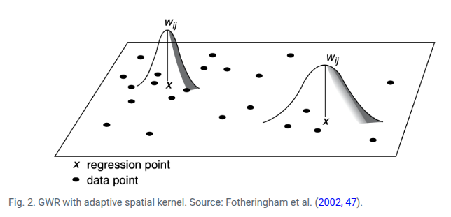
\(\rightarrow\) Quanto menor \(d_{ij}\), maior é o peso de \(j\) na estimação de \(\beta_k(u_i, v_i)\).
Fonte: ARDILLY, Pascal et al. Manuel d’analyse spatiale. 2018.
# lendo a base de queimadas
dados <- readxl::read_excel("dados/queimadas/queimadas_area.xlsx")# lendo o mapa do Rio de Janeiro
library(sf)
# Ler o arquivo
mapa_rj <- st_read("malhas/mapa_rj.shp")#> Reading layer `mapa_rj' from data source
#> `/home/wagner/Downloads/spatial_ebook_quarto/spatial_ebook_project/malhas/mapa_rj.shp'
#> using driver `ESRI Shapefile'
#> Simple feature collection with 92 features and 7 fields
#> Geometry type: MULTIPOLYGON
#> Dimension: XY
#> Bounding box: xmin: -44.88932 ymin: -23.36893 xmax: -40.95794 ymax: -20.76321
#> Geodetic CRS: SIRGAS 2000library(dplyr)
# Padronizar os nomes dos municípios em ambos os dataframes
mapa_rj <- mapa_rj %>%
mutate(name_mn = tolower(name_mn))
dados <- dados %>%
mutate(name_mn = tolower(name_mn))
# Fazer o left join usando as novas colunas padronizadas
mapa_rj <- mapa_rj %>%
left_join(dados, by = "name_mn")mapa_seq <- ggplot(mapa_rj) +
geom_sf(aes(fill = media_frp), color = "black", size = 0.1) +
scale_fill_gradientn(
colors = c("#2c7bb6", "#abd9e9", "#ffffbf", "#fdae61", "#d7191c"),
name = "FRP Médio"
) +
labs(title = "Média do FRP - Personalizado") +
theme_void()
mapa_seq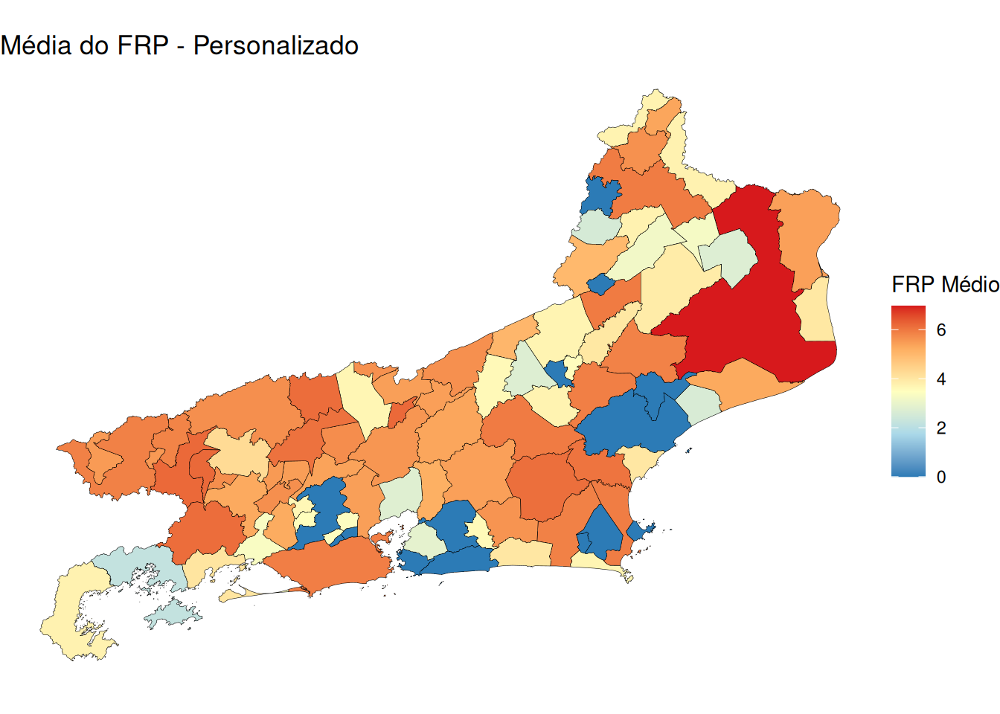
moran.test(mapa_rj$media_frp, pesos.viz)#>
#> Moran I test under randomisation
#>
#> data: mapa_rj$media_frp
#> weights: pesos.viz
#>
#> Moran I statistic standard deviate = 2.466, p-value = 0.006831
#> alternative hypothesis: greater
#> sample estimates:
#> Moran I statistic Expectation Variance
#> 0.169628429 -0.010989011 0.005364412queimadas.lm <- lm(media_frp ~ 1, data = mapa_rj)
summary(queimadas.lm)#>
#> Call:
#> lm(formula = media_frp ~ 1, data = mapa_rj)
#>
#> Residuals:
#> Min 1Q Median 3Q Max
#> -4.0603 -0.7348 0.5683 1.6052 2.9134
#>
#> Coefficients:
#> Estimate Std. Error t value Pr(>|t|)
#> (Intercept) 4.0603 0.2133 19.03 <2e-16 ***
#> ---
#> Signif. codes: 0 '***' 0.001 '**' 0.01 '*' 0.05 '.' 0.1 ' ' 1
#>
#> Residual standard error: 2.046 on 91 degrees of freedommedia_dias_sem_chuva no modelo# Ajustando o modelo de regressão linear simples
queimadas.lm2 <- lm(media_frp ~ media_dias_sem_chuva, data = mapa_rj)
summary(queimadas.lm2)#>
#> Call:
#> lm(formula = media_frp ~ media_dias_sem_chuva, data = mapa_rj)
#>
#> Residuals:
#> Min 1Q Median 3Q Max
#> -3.0672 -1.2250 0.5633 1.1730 2.6210
#>
#> Coefficients:
#> Estimate Std. Error t value Pr(>|t|)
#> (Intercept) 3.05612 0.26174 11.676 < 2e-16 ***
#> media_dias_sem_chuva 0.16462 0.03019 5.453 4.31e-07 ***
#> ---
#> Signif. codes: 0 '***' 0.001 '**' 0.01 '*' 0.05 '.' 0.1 ' ' 1
#>
#> Residual standard error: 1.784 on 90 degrees of freedom
#> Multiple R-squared: 0.2483, Adjusted R-squared: 0.24
#> F-statistic: 29.73 on 1 and 90 DF, p-value: 4.309e-07library(spdep)
queimadas.lm$lmresid <- residuals(queimadas.lm)
moran.test(queimadas.lm$lmresid, pesos.viz)#>
#> Moran I test under randomisation
#>
#> data: queimadas.lm$lmresid
#> weights: pesos.viz
#>
#> Moran I statistic standard deviate = 2.466, p-value = 0.006831
#> alternative hypothesis: greater
#> sample estimates:
#> Moran I statistic Expectation Variance
#> 0.169628429 -0.010989011 0.005364412O Modelo de Erro Espacial (Spatial Error Model - CAR), representado por:
\[y_i = \beta_0 + \sum^{p}_{k} \beta_k x_{ik} + \varepsilon_i\] \[\varepsilon_i = \lambda W + \xi\]
library(spatialreg)
queimadas.car <- errorsarlm(media_frp ~ 1, data = mapa_rj, listw = pesos.viz, Durbin = FALSE)
summary(queimadas.car)#>
#> Call:errorsarlm(formula = media_frp ~ 1, data = mapa_rj, listw = pesos.viz,
#> Durbin = FALSE)
#>
#> Residuals:
#> Min 1Q Median 3Q Max
#> -4.52836 -0.78012 0.63859 1.40498 3.02371
#>
#> Type: error
#> Coefficients: (asymptotic standard errors)
#> Estimate Std. Error z value Pr(>|z|)
#> (Intercept) 3.98226 0.28495 13.975 < 2.2e-16
#>
#> Lambda: 0.28059, LR test value: 4.5504, p-value: 0.032912
#> Asymptotic standard error: 0.1285
#> z-value: 2.1836, p-value: 0.028992
#> Wald statistic: 4.7681, p-value: 0.028992
#>
#> Log likelihood: -193.6419 for error model
#> ML residual variance (sigma squared): 3.8661, (sigma: 1.9663)
#> Number of observations: 92
#> Number of parameters estimated: 3
#> AIC: 393.28, (AIC for lm: 395.83)O Intercepto: \(3,982\) (\(p < 0.001\)), representa a média estimada de media_frp na ausência de preditores.
Lambda (\(λ = 0,28059\)) é o parâmetro de autocorrelação espacial dos erros. Quanto mais próximo de \(0\) (zero) for o valor valor de lambda, pouca ou nenhuma autocorrelação espacial nos erros, ou seja, nesse caso podemos observar uma dependência espacial moderada.
Testes de Significância do Lambda
| Teste | Estatística | p-valor | Interpretação |
|---|---|---|---|
| LR test | 4.5504 | 0.0329 | O modelo espacial é superior ao OLS |
| z-value | 2.1836 | 0.0290 | Lambda significativamente diferente de 0 |
| Wald | 4.7681 | 0.0290 | Confirma a significância do parâmetro espacial |
A variância residual estimada é de \(3,8661\).
O modelo espacial tem AIC menor que o modelo clássico (lm): AIC spatial \(=\) \(393,28\) \(<\) AIC lm \(=\) \(395,83\), o que indica que o modelo com erro espacial se ajusta melhor aos dados.
media_dias_sem_chuva no modeloqueimadas.car2 <- errorsarlm(media_frp ~ media_dias_sem_chuva, data = mapa_rj, listw = pesos.viz, Durbin = FALSE)
summary(queimadas.car2)#>
#> Call:errorsarlm(formula = media_frp ~ media_dias_sem_chuva, data = mapa_rj,
#> listw = pesos.viz, Durbin = FALSE)
#>
#> Residuals:
#> Min 1Q Median 3Q Max
#> -3.49610 -1.05656 0.45406 1.15077 2.47961
#>
#> Type: error
#> Coefficients: (asymptotic standard errors)
#> Estimate Std. Error z value Pr(>|z|)
#> (Intercept) 3.027598 0.299065 10.1236 < 2.2e-16
#> media_dias_sem_chuva 0.158451 0.029591 5.3548 8.566e-08
#>
#> Lambda: 0.24717, LR test value: 3.1804, p-value: 0.074528
#> Asymptotic standard error: 0.13111
#> z-value: 1.8851, p-value: 0.059411
#> Wald statistic: 3.5537, p-value: 0.059411
#>
#> Log likelihood: -181.1966 for error model
#> ML residual variance (sigma squared): 2.9631, (sigma: 1.7214)
#> Number of observations: 92
#> Number of parameters estimated: 4
#> AIC: 370.39, (AIC for lm: 371.57)Media de Dias Sem Chuva: \(0,1585\) (\(p < 0,001\)), representa a cada aumento de 1 dia na média sem chuva, a intensidade das queimadas (FRP) aumenta 0.1585 unidades
Lambda (\(λ = 0,24717\)), fazendo uma comparação com modelo nulo (\(\lambda = 0.28059\)), apresenta uma redução de \(0,28059 \rightarrow 0,24717\) \((\downarrow 11.9\%)\). Podemos dizer que a variável media_dias_sem_chuva explicou parte da dependência espacial.
Testes de Significância do Lambda
| Teste | Estatística | p-valor | Interpretação |
|---|---|---|---|
| LR test | 3.1804 | 0.0745 | Marginalmente não significativo |
| z-value | 1.8851 | 0.0594 | Tendência à significância |
| Wald | 3.5537 | 0.0594 | Confirma a tendência |
A variância residual estimada é de \(2,96\).
O modelo espacial com a variável media_dias_sem_chuva tem AIC menor que o modelo espacial vazio: AIC spatial \(=\) \(370,39\) \(<\) AIC vazio \(=\) \(393,28\), o que indica que o modelo com erro espacial com a variável media_dias_sem_chuva se ajusta melhor aos dados.
queimadas.car2$carresid <- residuals(queimadas.car2)
moran.test(queimadas.car2$carresid, pesos.viz)#>
#> Moran I test under randomisation
#>
#> data: queimadas.car2$carresid
#> weights: pesos.viz
#>
#> Moran I statistic standard deviate = 0.082822, p-value = 0.467
#> alternative hypothesis: greater
#> sample estimates:
#> Moran I statistic Expectation Variance
#> -0.004904690 -0.010989011 0.005396707Como o \(p-valor = 0,467 > 0,05\), não rejeitamos a hipótese nula de ausência de autocorrelação espacial nos resíduos. Isso indica que o modelo errorsarlm com a variável media_dias_sem_chuva eliminou adequadamente a autocorrelação espacial presente nos dados.
Esse é exatamente o objetivo do modelo errorsarlm, capturar a estrutura espacial nos erros. E a ausência de autocorrelação nos resíduos valida a adequação desse modelo para os seus dados.
# Método 1: Converter para Spatial explicitamente
mapa_rj_sp <- as(mapa_rj, "Spatial")
# Calcular centróides
centroides <- coordinates(mapa_rj_sp)
colnames(centroides) <- c("X", "Y")
centroides <- as.data.frame(centroides)# Biblioteca para ajustar o modelos GWR
library(spgwr)
# Estimando a largura de banda “ideal” para o kernel
GWRbanda <- gwr.sel(media_frp ~ media_dias_sem_chuva, data = mapa_rj, coords = cbind(centroides$X, centroides$Y), adapt = T)#> Adaptive q: 0.381966 CV score: 293.4932
#> Adaptive q: 0.618034 CV score: 296.7592
#> Adaptive q: 0.236068 CV score: 289.9323
#> Adaptive q: 0.145898 CV score: 288.4483
#> Adaptive q: 0.09016994 CV score: 285.4548
#> Adaptive q: 0.05572809 CV score: 285.7907
#> Adaptive q: 0.07987728 CV score: 282.4057
#> Adaptive q: 0.07333389 CV score: 281.0064
#> Adaptive q: 0.06660907 CV score: 282.5018
#> Adaptive q: 0.07337458 CV score: 280.9996
#> Adaptive q: 0.07477684 CV score: 280.7808
#> Adaptive q: 0.07672504 CV score: 280.9138
#> Adaptive q: 0.07524119 CV score: 280.7143
#> Adaptive q: 0.07551136 CV score: 280.677
#> Adaptive q: 0.07597495 CV score: 280.6152
#> Adaptive q: 0.07626146 CV score: 280.6866
#> Adaptive q: 0.07587383 CV score: 280.6284
#> Adaptive q: 0.07608438 CV score: 280.601
#> Adaptive q: 0.07615202 CV score: 280.6327
#> Adaptive q: 0.07604258 CV score: 280.6064
#> Adaptive q: 0.07608438 CV score: 280.601Carregando o pacote spgwr, que é usado para rodar regressões ponderadas geograficamente (GWR). Essa técnica permite que os coeficientes variem no espaço, ou seja, ela mostra como o efeito de uma variável muda de lugar para lugar.
gwr.sel() é uma função que ajuda a escolher a largura de banda (bandwidth) “ideal” para o modelo GWR. A largura de banda controla o raio de influência espacial ao redor de cada ponto (quais vizinhos têm mais peso).
Quanto menor a banda \(rightarrow\) modelo mais local (mais sensível ao espaço).
Quanto maior \(rightarrow\) modelo mais global (menos sensível ao espaço).
OBS: Esse valor de q representa a proporção de vizinhos usada para construir o kernel. Depois, ao ajustar o modelo com a função gwr(), será calculada internamente a distância física real correspondente em metros para cada ponto com base nas coordenadas UTM.
# Ajustando o modelo GWR
queimadas.gwr = gwr(media_frp ~ media_dias_sem_chuva, data = mapa_rj, coords = cbind(centroides$X, centroides$Y), adapt = GWRbanda, hatmatrix = TRUE, se.fit = TRUE)
queimadas.gwr#> Call:
#> gwr(formula = media_frp ~ media_dias_sem_chuva, data = mapa_rj,
#> coords = cbind(centroides$X, centroides$Y), adapt = GWRbanda,
#> hatmatrix = TRUE, se.fit = TRUE)
#> Kernel function: gwr.Gauss
#> Adaptive quantile: 0.07608438 (about 6 of 92 data points)
#> Summary of GWR coefficient estimates at data points:
#> Min. 1st Qu. Median 3rd Qu. Max. Global
#> X.Intercept. 1.47433 2.52055 2.98529 3.61925 4.57382 3.0561
#> media_dias_sem_chuva 0.42156 0.54171 0.62107 0.73118 0.99266 0.1646
#> Number of data points: 92
#> Effective number of parameters (residual: 2traceS - traceS'S): 19.59083
#> Effective degrees of freedom (residual: 2traceS - traceS'S): 72.40917
#> Sigma (residual: 2traceS - traceS'S): 1.65616
#> Effective number of parameters (model: traceS): 14.18723
#> Effective degrees of freedom (model: traceS): 77.81277
#> Sigma (model: traceS): 1.59762
#> Sigma (ML): 1.469282
#> AICc (GWR p. 61, eq 2.33; p. 96, eq. 4.21): 368.7429
#> AIC (GWR p. 96, eq. 4.22): 346.0703
#> Residual sum of squares: 198.6085
#> Quasi-global R2: 0.4788113coords = cbind(X, Y): Coordenadas dos pontos onde será ajustado o modelo (em nosso caso são os centroides dos setores).
adapt = GWRbanda: Usando a largura de banda adaptativa “ideal” já estimada (GWRbanda), que define o raio de influência espacial.
hatmatrix = TRUE: Retorna a matriz com estimativas usadas para cálculos como AIC e diagnóstico de resíduos.
se.fit = TRUE: Calcula os erros padrão das estimativas locais dos coeficientes.
Esse modelo permite analisar como o efeito da variável media_dias_sem_chuva sobre media_frp muda de um município para outro no estado do Rio de Janeiro. Em vez de um único coeficiente como na regressão tradicional, o GWR estima um coeficiente diferente para cada município.
Kernel function: gwr.Gauss → O modelo usou um kernel gaussiano, que atribui mais peso a vizinhos próximos.
Adaptive quantile: 0,07608438 → Como adapt = TRUE, a largura de banda representa uma proporção dos pontos vizinhos.
Quanto aos coeficientes do modelo, cada linha refere-se à distribuição dos coeficientes locais estimados em cada ponto do espaço (284 no total).
Por exemplo, o impacto da variável media_dias_sem_chuva sobre media_frp varia bastante no espaço, onde os municípios poder ter coeficientes de inclinação podem variar de \(0,4216\) até \(0.9927\).
A coluna Global mostra o coeficiente que seria obtido numa regressão tradicional (OLS).
Sigma (residual): Desvio padrão dos resíduos do modelo GWR.
AIC (GWR): Critério de informação de Akaike (quanto menor, melhor). Útil para comparar com OLS.
AICc (corrigido): Versão do AIC corrigida para modelos com muitos parâmetros.
Residual sum of squares: Soma dos quadrados dos resíduos (menor = melhor ajuste).
Quasi-global R²: Explica \(~48%\) da variabilidade de media_frp. Excelente ajuste para dados espaciais.
✅ Podemos observar através do ajuste do modelo que:
O modelo GWR encontrou variações espaciais significativas na relação entre media_dias_sem_chuva e media_frp.
Os coeficientes de lixo mudam no espaço, variando de fortemente negativos a levemente positivos.
O Quasi-R² de \(74\%\) indica que o modelo explica bem os dados.
A redução do AIC em relação ao modelo OLS (que tinha \(AIC ≈ 371,57\)) reforça a adequação do GWR (\(AIC ≈ 346,07\)).
# Colocando a saída do modelo dentro de um objeto dataframe.
results <- as.data.frame(queimadas.gwr$SDF)
head(results)media_dias_sem_chuvahist(results$media_dias_sem_chuva)
abline(v = median(results$media_dias_sem_chuva), col = "red")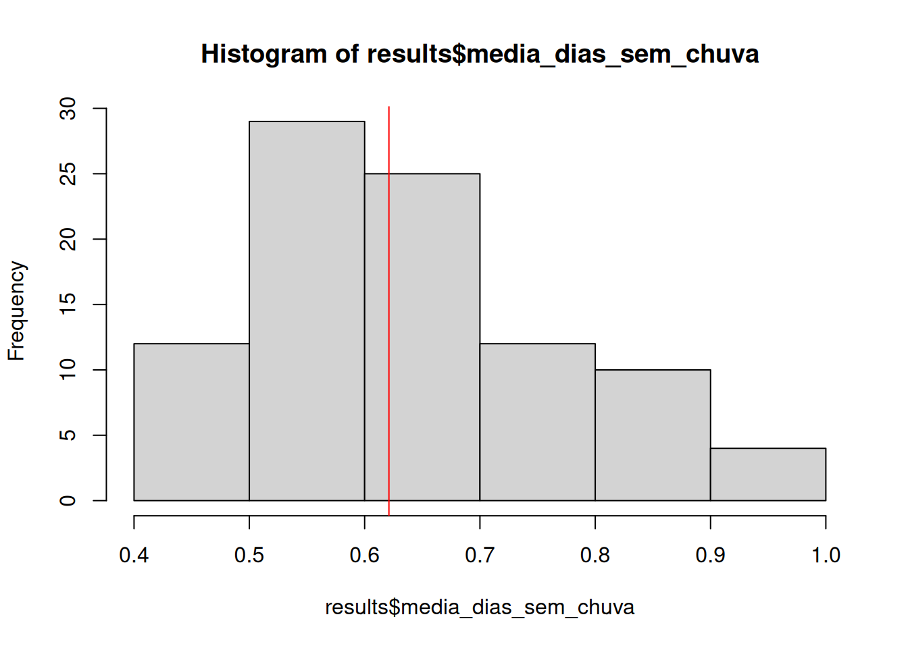
hist(results$localR2)
abline(v = median(results$localR2), col = "blue")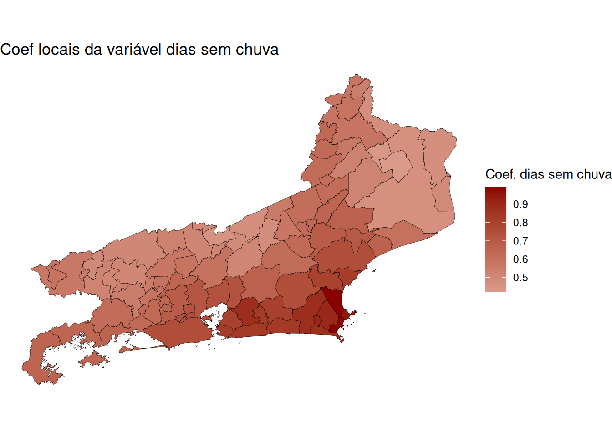
mapa_rj$coef_dias_sem_chuva <- results$media_dias_sem_chuva
mapa_rj$localR2 <- results$localR2
mapa_rj$pred.gwr <- results$predmap.dias_sem_chuvas <- ggplot(mapa_rj) +
geom_sf(aes(fill = coef_dias_sem_chuva), color = "black", size = 0.1) +
scale_fill_gradient2(
low = "blue", # para coeficientes negativos
mid = "white", # para valores próximos de zero
high = "darkred", # para coeficientes positivos
midpoint = 0, # centraliza a escala no zero
name = "Coef. dias sem chuva"
) +
ggtitle("Coef locais da variável dias sem chuva") +
theme_void()
map.dias_sem_chuvas
# Calculando os resíduos para o modelo GWR
results$residuos <- mapa_rj$media_frp - results$pred
moran.test(results$residuos, pesos.viz)#>
#> Moran I test under randomisation
#>
#> data: results$residuos
#> weights: pesos.viz
#>
#> Moran I statistic standard deviate = 0.16606, p-value = 0.4341
#> alternative hypothesis: greater
#> sample estimates:
#> Moran I statistic Expectation Variance
#> 0.001212100 -0.010989011 0.005398377media_dias_sem_chuva por significancia através do teste de waldO teste de Wald é utilizado para avaliar a significância estatística dos coeficientes estimados em modelos de regressão, como a Regressão Ponderada Geograficamente (GWR). A estatística de Wald testa se o coeficiente estimado (()) é significativamente diferente de zero, com base no seu erro padrão ((SE())).
A fórmula geral do teste é:
[ W = ]
Valores altos da estatística de Wald indicam maior evidência de que o coeficiente é significativamente diferente de zero. Sob a hipótese nula ((H_0: = 0)), a estatística de Wald segue uma distribuição normal padrão.
No contexto do modelo GWR, o teste de Wald foi aplicado ponto a ponto para o coeficiente local da variável media_dias_sem_chuva, utilizando a razão entre o valor absoluto do coeficiente estimado e seu erro padrão.
Para fins de mapeamento, a estatística foi dicotomizada da seguinte forma:
[ = \[\begin{cases} 1 & \text{se } W \geq 2 \ (\text{coeficiente significativo}) \\ 0 & \text{se } W < 2 \ (\text{coeficiente não significativo}) \end{cases}\]]
O limiar de \(2\) foi escolhido por ser uma aproximação prática do ponto de corte para um nível de significância de 5% (como (z = 1.96) na distribuição normal padrão).
Essa abordagem permite visualizar espacialmente onde a variável media_dias_sem_chuva exerce um efeito estatisticamente significativo sobre a variável dependente media_frp.
# Calculando a estatística de wald
mapa_rj$wald.teste <- abs(results$media_dias_sem_chuva/results$media_dias_sem_chuva_se)
# Dicotomizando a estatística de wald
mapa_rj$wald.teste_cat <- factor(ifelse(mapa_rj$wald.teste < 2, 0, 1),
levels = c(0, 1))
map.wald <- ggplot(mapa_rj) +
geom_sf(aes(fill = wald.teste_cat), color = "black") +
scale_fill_manual(values = c("white", "purple"),
labels = c("< 2", ">= 2"),
name = "Wald",
drop = FALSE) + # Não dropar níveis
ggtitle("Teste Wald") +
theme_void()
library(gridExtra)
grid.arrange(map.dias_sem_chuvas, map.wald, ncol = 2)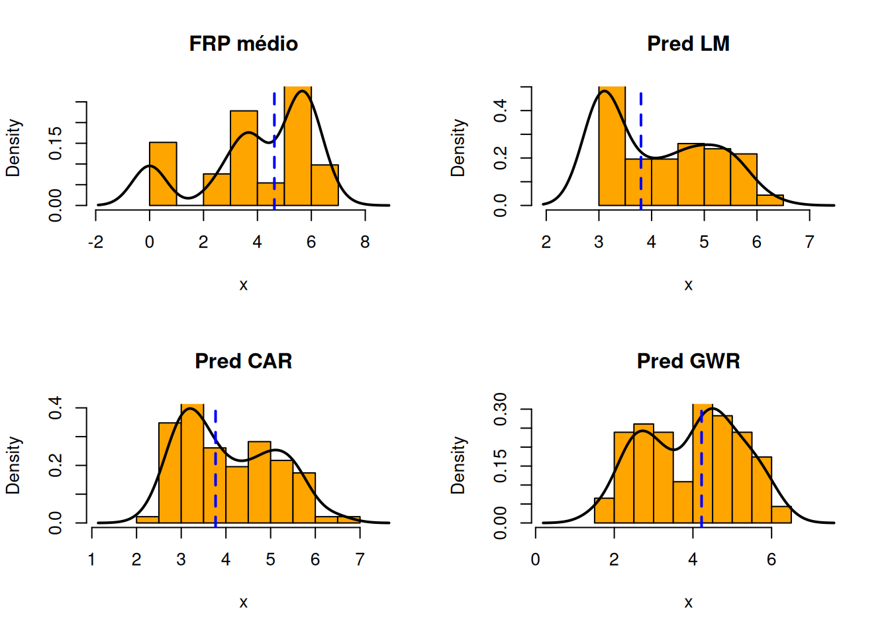
ggplot(mapa_rj) +
geom_sf(aes(fill = localR2), color = "black", size = 0.1) +
scale_fill_viridis_c(option = "viridis",, direction = -1, name = expression(R^2~local)) +
ggtitle("Mapa dos coeficientes de determinação regionalizados (R² local)") +
theme_void()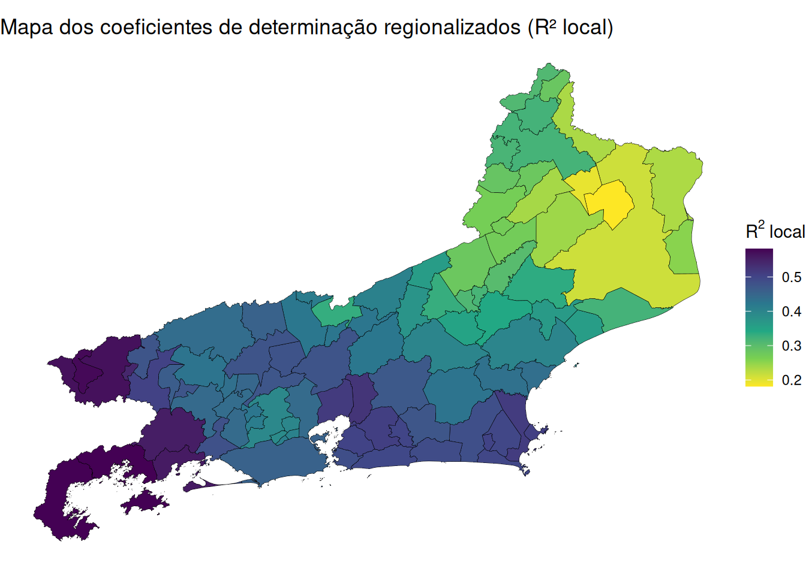
histdens <- function(x, titulo = "") {
densi <- density(x)
xli <- range(densi$x)
yli <- range(densi$y)
hist(x, col = "orange", probability = T, xlim = xli, ylim = yli, main = titulo)
lines(densi, lwd = 2)
abline(v = median(x), lwd = 2, col = "blue", lty = 2)
}
par(mfrow = c(2, 2))
hist.frp <- histdens(mapa_rj$media_frp, "FRP médio")
hist.lm <- histdens(queimadas.lm2$fitted.values, "Pred LM")
hist.car <- histdens(queimadas.car2$fitted.values, "Pred CAR")
hist.gwr <- histdens(results$pred, "Pred GWR")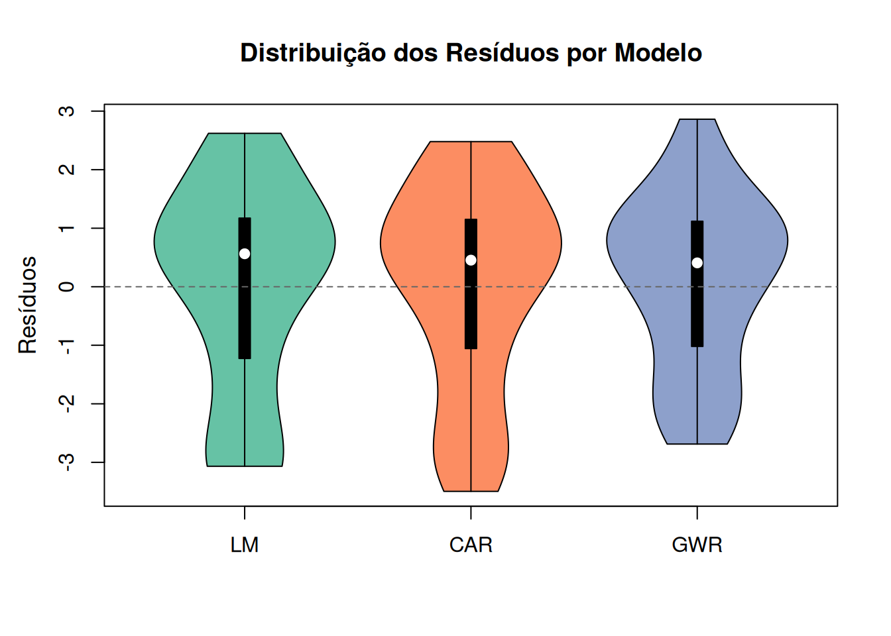
| Modelo | Adesão à distribuição real | Interpretação |
|---|---|---|
| FRP médio | — | Distribuição observada com assimetria à direita e dispersão moderada, apresentando valores mais concentrados entre ~4 e 6, com presença de cauda. Serve como referência para avaliar os modelos. |
| Pred LM | ❌ Fraca | MDistribuição excessivamente concentrada em valores baixos, com perda de variabilidade e deslocamento da média em relação aos dados observados. O modelo linear não captura adequadamente a forma da distribuição. |
| Pred CAR | ✅ Razoável | CReproduz parcialmente a variabilidade e a amplitude dos valores, aproximando-se da distribuição observada, porém ainda apresenta suavização e leve deslocamento da média, reduzindo a assimetria. |
| Pred GWR | ✅✅ Melhor | PrDistribuição mais próxima da observada, preservando melhor a dispersão, a posição da média e parte da assimetria, sugerindo maior capacidade do modelo em representar a heterogeneidade espacial dos dados. |
Apesar dos modelos analisarem apenas o efeito da variável media_dias_sem_chuva sobre a media_frp, observa-se que o modelo GWR foi o único capaz de gerar uma distribuição de preditos que preserva, em boa parte, a forma assimétrica e a dispersão da variável observada. Isso indica que o impacto de media_frp não é homogêneo e varia conforme a localização. Modelos tradicionais como o LM, ao assumirem um coeficiente global, subestimam a variabilidade local, enquanto modelos espaciais (CAR) ou locais (GWR) conseguem representar melhor essa relação dependente do espaço.
library(RColorBrewer)
# Define faixas de classes abrangentes
breaks_classes <- c(-Inf, 0, 2, 4, 10, Inf)
labels_classes <- c("< 0", "0 - 2", "2 - 4", "4 - 10", "> 10")
# -----------------------------------------
# Taxa Bruta Observada
mapa_rj$brks <- cut(mapa_rj$media_frp,
breaks = breaks_classes,
include.lowest = TRUE,
right = TRUE,
labels = labels_classes)
tx.bruta <- ggplot(mapa_rj) +
geom_sf(aes(fill = brks), color = "black", size = 0.1) +
scale_fill_brewer(palette = "YlOrRd", name = "Taxa") +
ggtitle("Taxa Bruta") +
theme_void()
# -----------------------------------------
# Predito - LM
mapa_rj$brks.lm <- cut(queimadas.lm2$fitted.values,
breaks = breaks_classes,
include.lowest = TRUE,
right = TRUE,
labels = labels_classes)
pred.lm <- ggplot(mapa_rj) +
geom_sf(aes(fill = brks.lm), color = "black", size = 0.1) +
scale_fill_brewer(palette = "YlOrRd", name = "Taxa") +
ggtitle("Taxa Predita - LM") +
theme_void()
# -----------------------------------------
# Predito - CAR
mapa_rj$brks.car <- cut(queimadas.car2$fitted.values,
breaks = breaks_classes,
include.lowest = TRUE,
right = TRUE,
labels = labels_classes)
pred.car <- ggplot(mapa_rj) +
geom_sf(aes(fill = brks.car), color = "black", size = 0.1) +
scale_fill_brewer(palette = "YlOrRd", name = "Taxa") +
ggtitle("Taxa Predita - CAR") +
theme_void()
# -----------------------------------------
# Predito - GWR
mapa_rj$brks.gwr <- cut(results$pred,
breaks = breaks_classes,
include.lowest = TRUE,
right = TRUE,
labels = labels_classes)
pred.gwr <- ggplot(mapa_rj) +
geom_sf(aes(fill = brks.gwr), color = "black", size = 0.1) +
scale_fill_brewer(palette = "YlOrRd", name = "Taxa") +
ggtitle("Taxa Predita - GWR") +
theme_void()
# -----------------------------------------
# Mostrar mapas lado a lado
grid.arrange(tx.bruta, pred.lm, pred.car, pred.gwr, ncol = 2)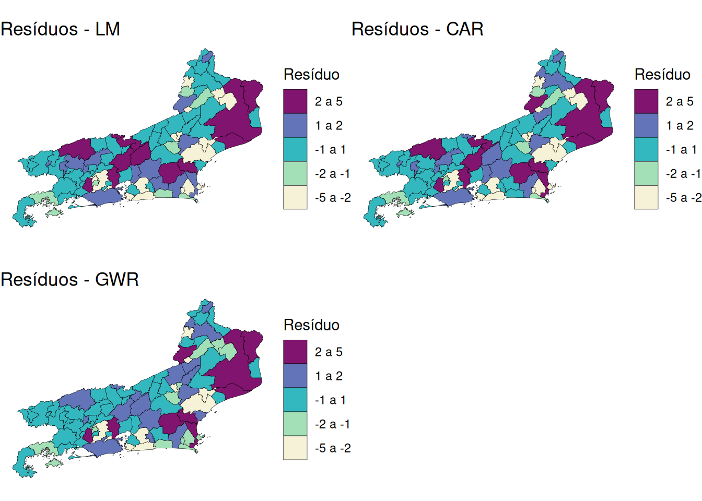
library(vioplot)
# Define os resíduos
res_lm <- queimadas.lm2$residuals
res_car <- queimadas.car2$residuals
res_gwr <- results$residuos
# Paleta de cores agradável
cores <- c("#66C2A5", "#FC8D62", "#8DA0CB") # Paleta Set2 do RColorBrewer
# Gráfico violin com visual melhorado
vioplot(
res_lm, res_car, res_gwr,
names = c("LM", "CAR", "GWR"),
col = cores,
border = "black",
drawRect = TRUE # mediana dos resíduos
)
# Título e rótulo do eixo Y
title(main = "Distribuição dos Resíduos por Modelo", cex.main = 1.2)
mtext("Resíduos", side = 2, line = 2.5, cex = 1.1)
# Linha horizontal em y = 0 para referência
abline(h = 0, lty = 2, col = "grey40")
| Modelo | Centralidade dos resíduos | Dispersão | Presença de extremos | Interpretação |
|---|---|---|---|---|
| LM | Aproximadamente centrados em zero | Moderada a alta | Moderada | Indica ausência de viés sistemático, porém com maior variabilidade dos erros. |
| CAR | Próximos de zero | Moderada | Maior presença nas caudas | Sugere melhor acomodação da dependência espacial, mas ainda com ocorrência de resíduos extremos. |
| GWR | Centrado em zero | Moderada | Menor concentração de extremos | Distribuição mais equilibrada dos resíduos, indicando melhor ajuste local e captura da heterogeneidade espacial. |
library(ggplot2)
library(colorspace)
library(gridExtra)
# Quebras e rótulos
breaks_res <- c(-5, -2, -1, 1, 2, 5)
labels_res <- c("-5 a -2", "-2 a -1", "-1 a 1", "1 a 2", "2 a 5")
# ------------------------------
# Resíduos - LM
mapa_rj$brks.res.lm <- cut(queimadas.lm2$residuals,
breaks = breaks_res,
labels = labels_res,
include.lowest = TRUE,
right = TRUE)
res.lm <- ggplot(mapa_rj) +
geom_sf(aes(fill = brks.res.lm), color = "black", size = 0.1) +
scale_fill_discrete_sequential(
palette = "Purple-Yellow",
name = "Resíduo",
na.value = "grey75",
drop = FALSE
) +
guides(fill = guide_legend(reverse = TRUE)) + # INVERTE A LEGENDA
ggtitle("Resíduos - LM") +
theme_void()
# ------------------------------
# Resíduos - CAR
mapa_rj$brks.res.car <- cut(queimadas.car2$residuals,
breaks = breaks_res,
labels = labels_res,
include.lowest = TRUE,
right = TRUE)
res.car <- ggplot(mapa_rj) +
geom_sf(aes(fill = brks.res.car), color = "black", size = 0.1) +
scale_fill_discrete_sequential(
palette = "Purple-Yellow",
name = "Resíduo",
na.value = "grey75",
drop = FALSE
) +
guides(fill = guide_legend(reverse = TRUE)) + # INVERTE A LEGENDA
ggtitle("Resíduos - CAR") +
theme_void()
# ------------------------------
# Resíduos - GWR
mapa_rj$brks.res.gwr <- cut(results$residuos,
breaks = breaks_res,
labels = labels_res,
include.lowest = TRUE,
right = TRUE)
res.gwr <- ggplot(mapa_rj) +
geom_sf(aes(fill = brks.res.gwr), color = "black", size = 0.1) +
scale_fill_discrete_sequential(
palette = "Purple-Yellow",
name = "Resíduo",
na.value = "grey75",
drop = FALSE
) +
guides(fill = guide_legend(reverse = TRUE)) + # INVERTE A LEGENDA
ggtitle("Resíduos - GWR") +
theme_void()
# ------------------------------
# Exibir mapas
grid.arrange(res.lm, res.car, res.gwr, ncol = 2)